Analysis of Publication Year Effect
Adam H. Sparks
2022-07-02
Source:vignettes/g_analysis_year.Rmd
g_analysis_year.RmdThis vignette documents the analysis of the data gathered from surveying 21 journals and 450 articles in the field of plant pathology for their openness and reproducibility and the effect that the publication year had on that score.
Set-up Workspace
Load libraries used and setting the ggplot2 theme for the document.
library("brms")
library("bayestestR")
library("bayesplot")
library("ggplot2")
library("here")
library("pander")
library("report")
library("tidyr")
library("Reproducibility.in.Plant.Pathology")
options(mc.cores = parallel::detectCores())
theme_set(theme_classic())Year of Publication Effect Models
Computational Methods Availability
Test the effect that year of publication had on the code
availability. Here, year is a fixed effect,
journal and assignee are assigned as random
effects.
rrpp <- import_notes()
rrpp <- drop_na(rrpp, comp_mthds_avail)
m_g1 <-
brm(
formula = comp_mthds_avail ~ year +
(1 | abbreviation) +
(1 | assignee),
data = rrpp,
seed = 27,
prior = priors,
family = cumulative(),
iter = 10000,
control = list(adapt_delta = 0.9999),
)
#> Compiling Stan program...
#> Start sampling
summary(m_g1)
#> Family: cumulative
#> Links: mu = logit; disc = identity
#> Formula: comp_mthds_avail ~ year + (1 | abbreviation) + (1 | assignee)
#> Data: rrpp (Number of observations: 440)
#> Draws: 4 chains, each with iter = 10000; warmup = 5000; thin = 1;
#> total post-warmup draws = 20000
#>
#> Group-Level Effects:
#> ~abbreviation (Number of levels: 21)
#> Estimate Est.Error l-95% CI u-95% CI Rhat Bulk_ESS Tail_ESS
#> sd(Intercept) 1.44 0.93 0.10 3.64 1.00 7001 6865
#>
#> ~assignee (Number of levels: 5)
#> Estimate Est.Error l-95% CI u-95% CI Rhat Bulk_ESS Tail_ESS
#> sd(Intercept) 7.20 3.29 3.18 15.32 1.00 6717 10829
#>
#> Population-Level Effects:
#> Estimate Est.Error l-95% CI u-95% CI Rhat Bulk_ESS Tail_ESS
#> Intercept[1] 0.27 0.80 -1.31 1.83 1.00 19993 14790
#> Intercept[2] 0.68 0.80 -0.90 2.22 1.00 22586 15584
#> year2013 -0.29 0.88 -2.06 1.37 1.00 23853 14073
#> year2014 -0.29 0.89 -2.08 1.40 1.00 25685 14099
#> year2015 0.38 0.85 -1.37 1.98 1.00 25608 14850
#> year2016 0.44 0.84 -1.26 2.06 1.00 25509 14879
#> year2017 -0.32 0.90 -2.11 1.41 1.00 24491 14975
#> year2018 -0.29 0.90 -2.09 1.43 1.00 24223 15436
#> year2019 0.78 0.76 -0.75 2.24 1.00 23874 15401
#> year2020 -0.32 0.89 -2.12 1.36 1.00 24911 14684
#> year2021 0.36 0.82 -1.31 1.93 1.00 24249 14405
#>
#> Family Specific Parameters:
#> Estimate Est.Error l-95% CI u-95% CI Rhat Bulk_ESS Tail_ESS
#> disc 1.00 0.00 1.00 1.00 NA NA NA
#>
#> Draws were sampled using sampling(NUTS). For each parameter, Bulk_ESS
#> and Tail_ESS are effective sample size measures, and Rhat is the potential
#> scale reduction factor on split chains (at convergence, Rhat = 1).
plot(m_g1) 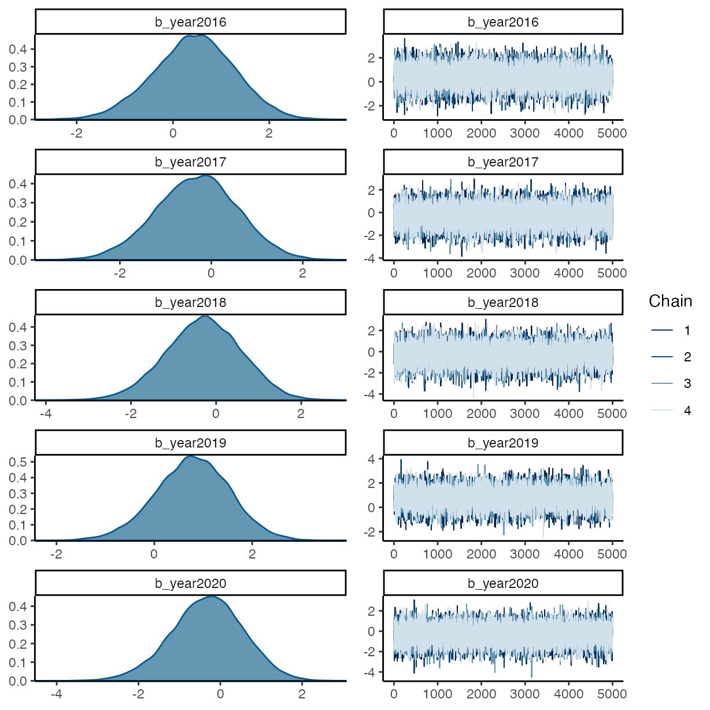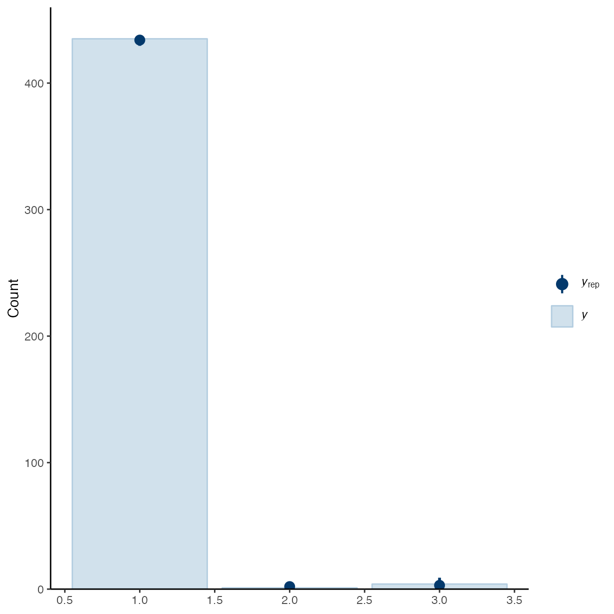
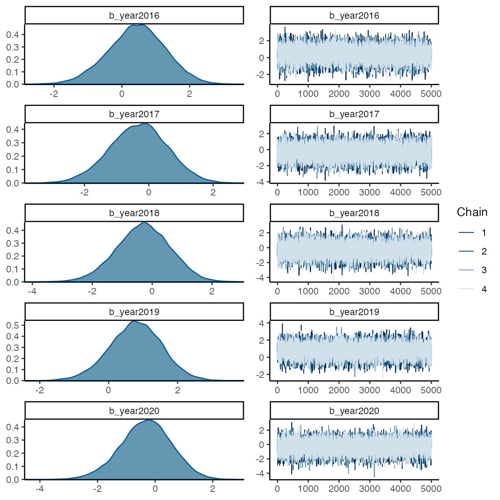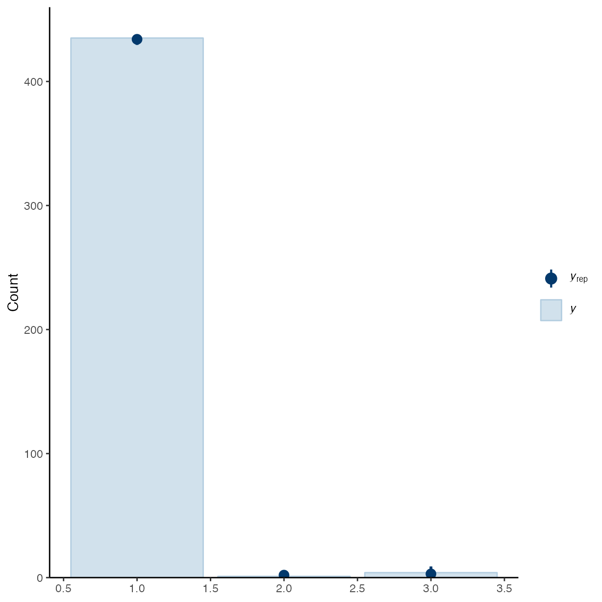
pp_check(m_g1, ndraws = 50, type = "bars")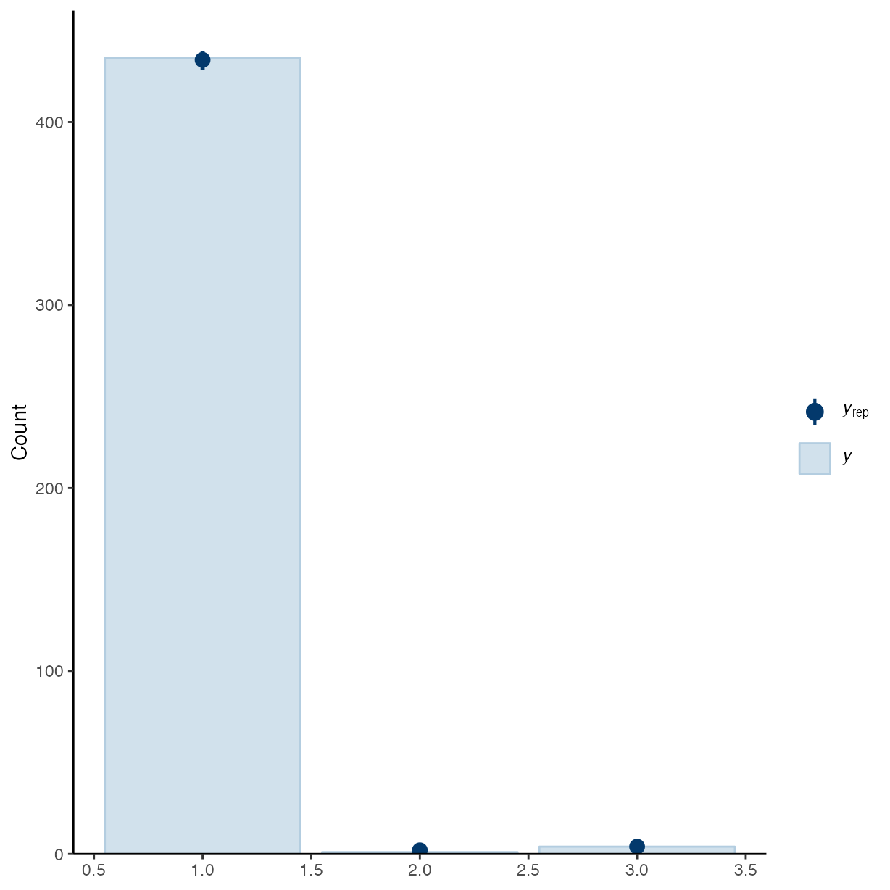
plot(equivalence_test(m_g1))
#> Picking joint bandwidth of 0.0924
#> Warning: Removed 11000 rows containing non-finite values (stat_density_ridges).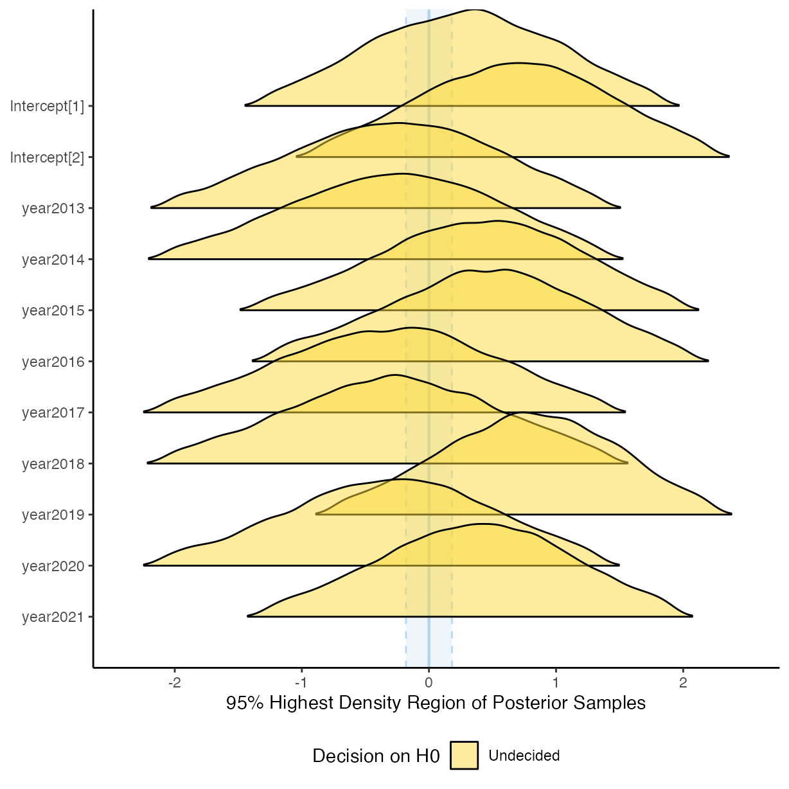
pander(m_g1_report <- report(m_g1))
#> Warning: Predictions are treated as continuous variables in 'bayes_R2' which is
#> likely invalid for ordinal families.
#> Warning: Predictions are treated as continuous variables in 'bayes_R2' which is
#> likely invalid for ordinal families.
#> Warning: 'data_findcols()' is deprecated and will be removed in a future update.
#> Its usage is discouraged. Please use 'data_find()' instead.
#> Start sampling
#> Warning: Predictions are treated as continuous variables in 'bayes_R2' which is
#> likely invalid for ordinal families.
#> Warning: Predictions are treated as continuous variables in 'bayes_R2' which is
#> likely invalid for ordinal families.
#> Warning: 'data_findcols()' is deprecated and will be removed in a future update.
#> Its usage is discouraged. Please use 'data_find()' instead.We fitted a Bayesian logistic mixed model (estimated using MCMC sampling with 4 chains of 10000 iterations and a warmup of 5000) to predict comp_mthds_avail with year (formula: comp_mthds_avail ~ year). The model included abbreviation and assignee as random effects (formula: list(~1 | abbreviation, ~1 | assignee)). Priors over parameters were set as normal (mean = 0.00, SD = 1.00), normal (mean = 0.00, SD = 1.00), normal (mean = 0.00, SD = 1.00), normal (mean = 0.00, SD = 1.00), normal (mean = 0.00, SD = 1.00), normal (mean = 0.00, SD = 1.00), normal (mean = 0.00, SD = 1.00), normal (mean = 0.00, SD = 1.00), normal (mean = 0.00, SD = 1.00), normal (mean = 0.00, SD = 1.00), normal (mean = 0.00, SD = 1.00), normal (mean = 0.00, SD = 1.00), normal (mean = 0.00, SD = 1.00), normal (mean = 0.00, SD = 1.00), normal (mean = 0.00, SD = 1.00), normal (mean = 0.00, SD = 1.00), normal (mean = 0.00, SD = 1.00), student_t (location = 0.00, scale = 2.50) and student_t (location = 0.00, scale = 2.50) distributions. The model’s explanatory power is weak (R2 = 0.07, 95% CI [1.21e-03, 0.24]) and the part related to the fixed effects alone (marginal R2) is of 0.44 (95% CI [0.33, 0.49]). Within this model:
- The effect of b Intercept[1] (Median = 0.28, 95% CI [-1.31, 1.83]) has a 63.37% probability of being positive (> 0), 61.02% of being significant (> 0.05), and 48.99% of being large (> 0.30). The estimation successfully converged (Rhat = 1.000) and the indices are reliable (ESS = 19970)
- The effect of b Intercept[2] (Median = 0.69, 95% CI [-0.90, 2.22]) has a 80.05% probability of being positive (> 0), 78.21% of being significant (> 0.05), and 68.14% of being large (> 0.30). The estimation successfully converged (Rhat = 1.000) and the indices are reliable (ESS = 22564)
- The effect of b year2013 (Median = -0.27, 95% CI [-2.06, 1.37]) has a 62.21% probability of being negative (< 0), 60.05% of being significant (< -0.05), and 48.81% of being large (< -0.30). The estimation successfully converged (Rhat = 1.000) and the indices are reliable (ESS = 23650)
- The effect of b year2014 (Median = -0.27, 95% CI [-2.08, 1.40]) has a 61.97% probability of being negative (< 0), 59.80% of being significant (< -0.05), and 48.52% of being large (< -0.30). The estimation successfully converged (Rhat = 1.000) and the indices are reliable (ESS = 25456)
- The effect of b year2015 (Median = 0.40, 95% CI [-1.37, 1.98]) has a 67.97% probability of being positive (> 0), 65.89% of being significant (> 0.05), and 54.70% of being large (> 0.30). The estimation successfully converged (Rhat = 1.000) and the indices are reliable (ESS = 25220)
- The effect of b year2016 (Median = 0.46, 95% CI [-1.26, 2.06]) has a 70.73% probability of being positive (> 0), 68.77% of being significant (> 0.05), and 57.40% of being large (> 0.30). The estimation successfully converged (Rhat = 1.000) and the indices are reliable (ESS = 25034)
- The effect of b year2017 (Median = -0.30, 95% CI [-2.11, 1.41]) has a 63.24% probability of being negative (< 0), 61.07% of being significant (< -0.05), and 49.85% of being large (< -0.30). The estimation successfully converged (Rhat = 1.000) and the indices are reliable (ESS = 24321)
- The effect of b year2018 (Median = -0.28, 95% CI [-2.09, 1.43]) has a 62.67% probability of being negative (< 0), 60.54% of being significant (< -0.05), and 49.14% of being large (< -0.30). The estimation successfully converged (Rhat = 1.000) and the indices are reliable (ESS = 24165)
- The effect of b year2019 (Median = 0.79, 95% CI [-0.75, 2.24]) has a 85.00% probability of being positive (> 0), 83.45% of being significant (> 0.05), and 74.19% of being large (> 0.30). The estimation successfully converged (Rhat = 1.000) and the indices are reliable (ESS = 23683)
- The effect of b year2020 (Median = -0.30, 95% CI [-2.12, 1.36]) has a 63.48% probability of being negative (< 0), 61.22% of being significant (< -0.05), and 49.95% of being large (< -0.30). The estimation successfully converged (Rhat = 1.000) and the indices are reliable (ESS = 24611)
- The effect of b year2021 (Median = 0.38, 95% CI [-1.31, 1.93]) has a 67.73% probability of being positive (> 0), 65.50% of being significant (> 0.05), and 53.91% of being large (> 0.30). The estimation successfully converged (Rhat = 1.000) and the indices are reliable (ESS = 24080)
Following the Sequential Effect eXistence and sIgnificance Testing (SEXIT) framework, we report the median of the posterior distribution and its 95% CI (Highest Density Interval), along the probability of direction (pd), the probability of significance and the probability of being large. The thresholds beyond which the effect is considered as significant (i.e., non-negligible) and large are |0.05| and |0.30|. Convergence and stability of the Bayesian sampling has been assessed using R-hat, which should be below 1.01 (Vehtari et al., 2019), and Effective Sample Size (ESS), which should be greater than 1000 (Burkner, 2017).
Data Availability
rrpp <- import_notes()
rrpp <- drop_na(rrpp, data_avail)
m_g2 <-
brm(
formula = data_avail ~ year +
(1 | abbreviation) +
(1 | assignee),
data = rrpp,
seed = 27,
prior = priors,
family = cumulative(),
iter = 10000,
control = list(adapt_delta = 0.9999),
)
#> Compiling Stan program...
#> Start sampling
summary(m_g2)
#> Family: cumulative
#> Links: mu = logit; disc = identity
#> Formula: data_avail ~ year + (1 | abbreviation) + (1 | assignee)
#> Data: rrpp (Number of observations: 448)
#> Draws: 4 chains, each with iter = 10000; warmup = 5000; thin = 1;
#> total post-warmup draws = 20000
#>
#> Group-Level Effects:
#> ~abbreviation (Number of levels: 21)
#> Estimate Est.Error l-95% CI u-95% CI Rhat Bulk_ESS Tail_ESS
#> sd(Intercept) 0.79 0.28 0.33 1.41 1.00 5387 7099
#>
#> ~assignee (Number of levels: 5)
#> Estimate Est.Error l-95% CI u-95% CI Rhat Bulk_ESS Tail_ESS
#> sd(Intercept) 2.46 1.39 0.40 5.81 1.00 3986 2831
#>
#> Population-Level Effects:
#> Estimate Est.Error l-95% CI u-95% CI Rhat Bulk_ESS Tail_ESS
#> Intercept[1] 0.46 0.69 -0.87 1.78 1.00 5702 5479
#> Intercept[2] 0.80 0.68 -0.54 2.11 1.00 5745 5646
#> Intercept[3] 1.32 0.68 -0.02 2.62 1.00 5923 5920
#> year2013 -0.24 0.46 -1.17 0.63 1.00 18463 14670
#> year2014 -0.14 0.47 -1.10 0.75 1.00 19806 14004
#> year2015 0.35 0.50 -0.64 1.31 1.00 20042 14899
#> year2016 0.96 0.41 0.17 1.76 1.00 17174 14469
#> year2017 -0.20 0.47 -1.14 0.69 1.00 17475 14933
#> year2018 0.14 0.47 -0.78 1.04 1.00 15988 15378
#> year2019 0.22 0.44 -0.66 1.06 1.00 16982 15266
#> year2020 0.14 0.44 -0.74 0.98 1.00 17495 15461
#> year2021 0.57 0.41 -0.24 1.37 1.00 14763 15308
#>
#> Family Specific Parameters:
#> Estimate Est.Error l-95% CI u-95% CI Rhat Bulk_ESS Tail_ESS
#> disc 1.00 0.00 1.00 1.00 NA NA NA
#>
#> Draws were sampled using sampling(NUTS). For each parameter, Bulk_ESS
#> and Tail_ESS are effective sample size measures, and Rhat is the potential
#> scale reduction factor on split chains (at convergence, Rhat = 1).
plot(m_g2)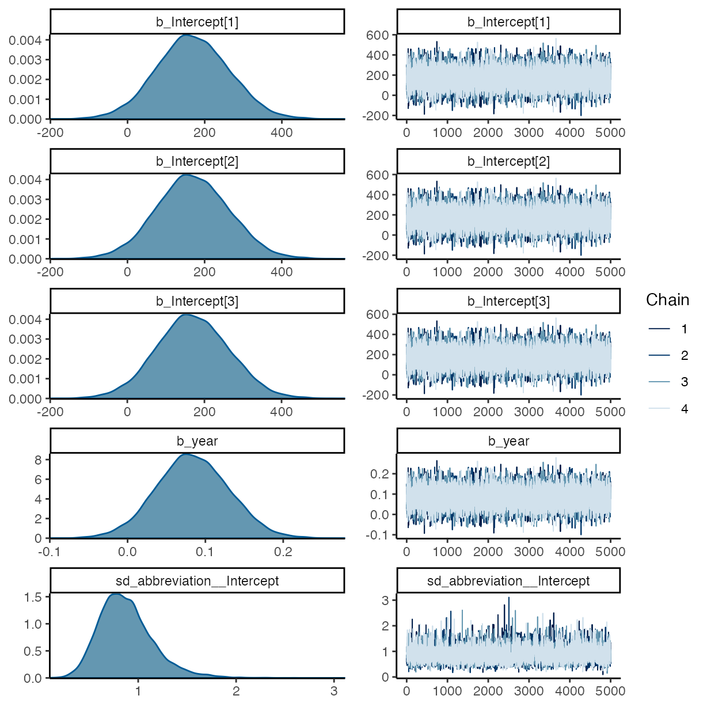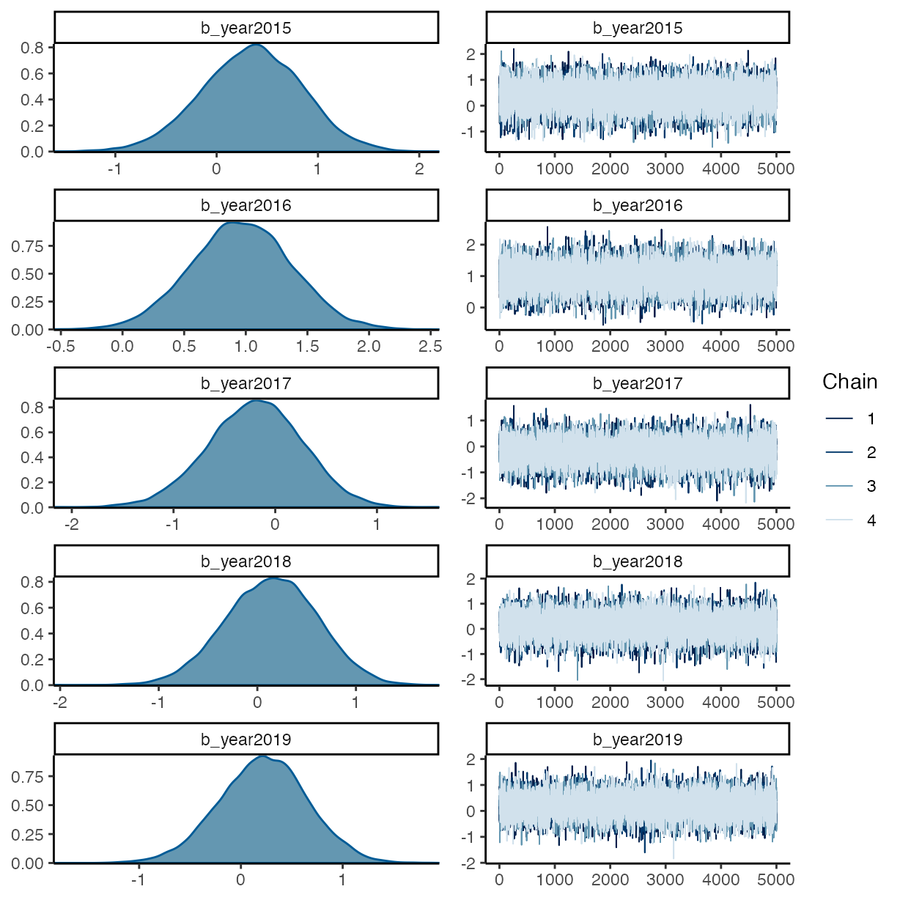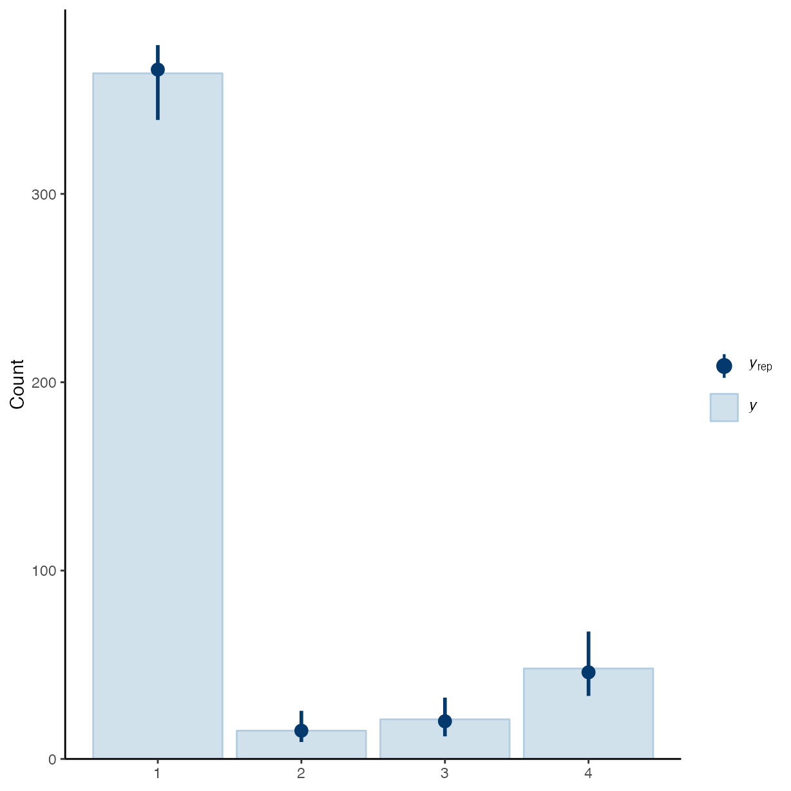
pp_check(m_g2, ndraws = 50, type = "bars")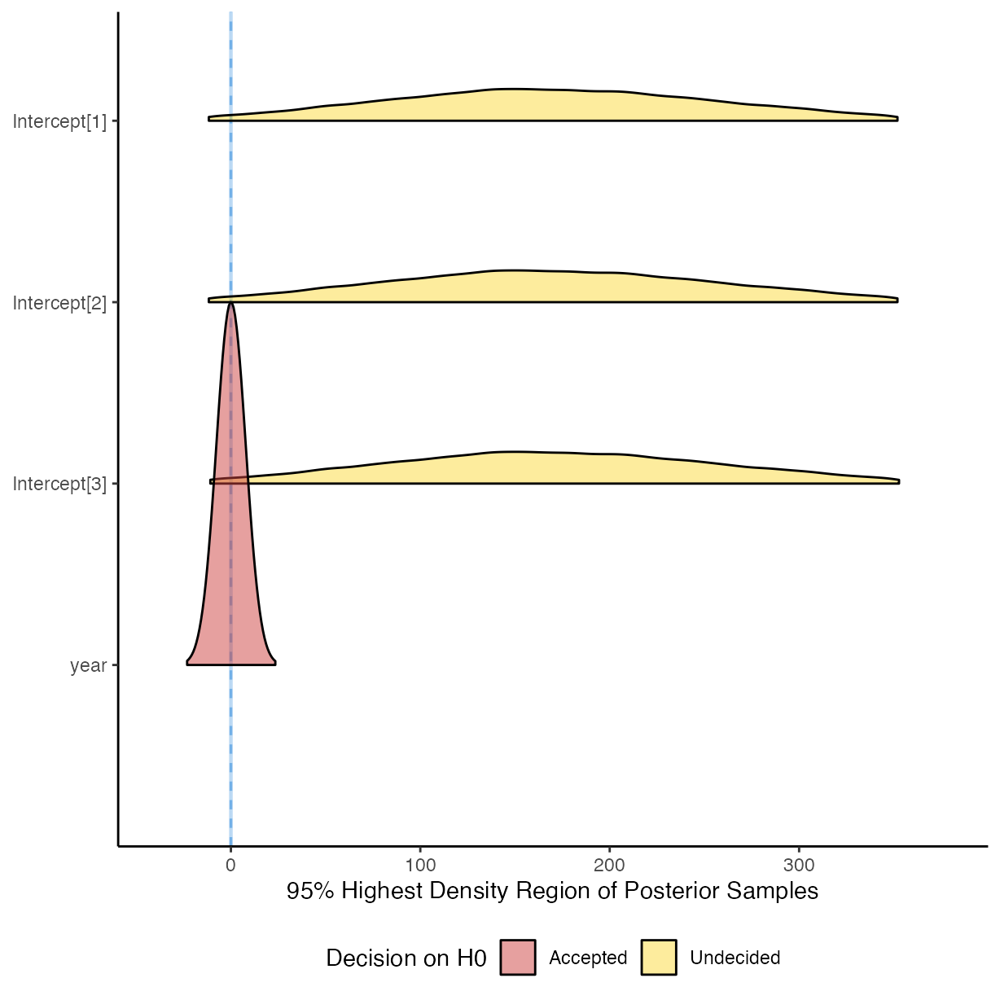
plot(equivalence_test(m_g2))
#> Picking joint bandwidth of 0.0559
#> Warning: Removed 12000 rows containing non-finite values (stat_density_ridges).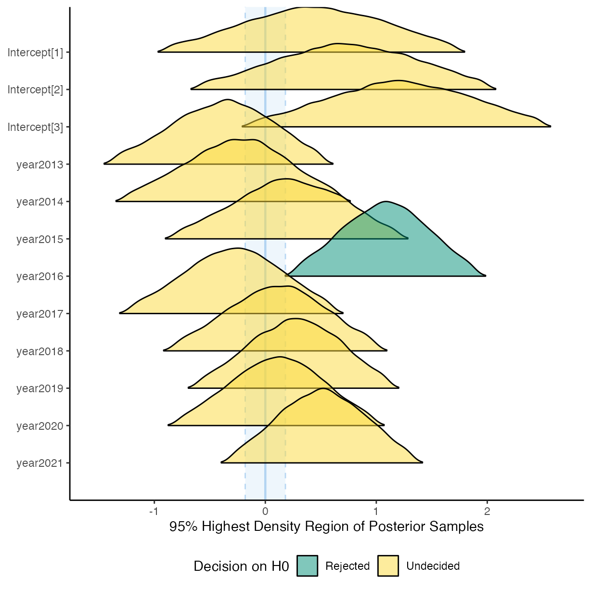
pander(m_g2_report <- report(m_g2))
#> Warning: Predictions are treated as continuous variables in 'bayes_R2' which is
#> likely invalid for ordinal families.
#> Warning: Predictions are treated as continuous variables in 'bayes_R2' which is
#> likely invalid for ordinal families.
#> Warning: 'data_findcols()' is deprecated and will be removed in a future update.
#> Its usage is discouraged. Please use 'data_find()' instead.
#> Start sampling
#> Warning: Predictions are treated as continuous variables in 'bayes_R2' which is
#> likely invalid for ordinal families.
#> Warning: Predictions are treated as continuous variables in 'bayes_R2' which is
#> likely invalid for ordinal families.
#> Warning: 'data_findcols()' is deprecated and will be removed in a future update.
#> Its usage is discouraged. Please use 'data_find()' instead.We fitted a Bayesian logistic mixed model (estimated using MCMC sampling with 4 chains of 10000 iterations and a warmup of 5000) to predict data_avail with year (formula: data_avail ~ year). The model included abbreviation and assignee as random effects (formula: list(~1 | abbreviation, ~1 | assignee)). Priors over parameters were set as normal (mean = 0.00, SD = 1.00), normal (mean = 0.00, SD = 1.00), normal (mean = 0.00, SD = 1.00), normal (mean = 0.00, SD = 1.00), normal (mean = 0.00, SD = 1.00), normal (mean = 0.00, SD = 1.00), normal (mean = 0.00, SD = 1.00), normal (mean = 0.00, SD = 1.00), normal (mean = 0.00, SD = 1.00), normal (mean = 0.00, SD = 1.00), normal (mean = 0.00, SD = 1.00), normal (mean = 0.00, SD = 1.00), normal (mean = 0.00, SD = 1.00), normal (mean = 0.00, SD = 1.00), normal (mean = 0.00, SD = 1.00), normal (mean = 0.00, SD = 1.00), normal (mean = 0.00, SD = 1.00), normal (mean = 0.00, SD = 1.00), normal (mean = 0.00, SD = 1.00), normal (mean = 0.00, SD = 1.00), normal (mean = 0.00, SD = 1.00), normal (mean = 0.00, SD = 1.00), normal (mean = 0.00, SD = 1.00), normal (mean = 0.00, SD = 1.00), student_t (location = 0.00, scale = 2.50) and student_t (location = 0.00, scale = 2.50) distributions. The model’s explanatory power is weak (R2 = 0.12, 95% CI [0.06, 0.18]) and the part related to the fixed effects alone (marginal R2) is of 0.08 (95% CI [0.02, 0.15]). Within this model:
- The effect of b Intercept[1] (Median = 0.46, 95% CI [-0.87, 1.78]) has a 74.03% probability of being positive (> 0), 71.80% of being significant (> 0.05), and 58.50% of being large (> 0.30). The estimation successfully converged (Rhat = 1.000) and the indices are reliable (ESS = 5757)
- The effect of b Intercept[2] (Median = 0.79, 95% CI [-0.54, 2.11]) has a 87.44% probability of being positive (> 0), 85.84% of being significant (> 0.05), and 76.19% of being large (> 0.30). The estimation successfully converged (Rhat = 1.000) and the indices are reliable (ESS = 5803)
- The effect of b Intercept[3] (Median = 1.32, 95% CI [-0.02, 2.62]) has a 97.28% probability of being positive (> 0), 96.80% of being significant (> 0.05), and 92.89% of being large (> 0.30). The estimation successfully converged (Rhat = 1.000) and the indices are reliable (ESS = 5982)
- The effect of b year2013 (Median = -0.24, 95% CI [-1.17, 0.63]) has a 69.70% probability of being negative (< 0), 65.70% of being significant (< -0.05), and 44.40% of being large (< -0.30). The estimation successfully converged (Rhat = 1.000) and the indices are reliable (ESS = 18500)
- The effect of b year2014 (Median = -0.14, 95% CI [-1.10, 0.75]) has a 61.65% probability of being negative (< 0), 57.44% of being significant (< -0.05), and 36.04% of being large (< -0.30). The estimation successfully converged (Rhat = 1.000) and the indices are reliable (ESS = 19674)
- The effect of b year2015 (Median = 0.36, 95% CI [-0.64, 1.31]) has a 76.11% probability of being positive (> 0), 72.95% of being significant (> 0.05), and 54.84% of being large (> 0.30). The estimation successfully converged (Rhat = 1.000) and the indices are reliable (ESS = 19968)
- The effect of b year2016 (Median = 0.96, 95% CI [0.17, 1.76]) has a 99.10% probability of being positive (> 0), 98.75% of being significant (> 0.05), and 94.70% of being large (> 0.30). The estimation successfully converged (Rhat = 1.000) and the indices are reliable (ESS = 17241)
- The effect of b year2017 (Median = -0.19, 95% CI [-1.14, 0.69]) has a 66.09% probability of being negative (< 0), 61.79% of being significant (< -0.05), and 40.54% of being large (< -0.30). The estimation successfully converged (Rhat = 1.000) and the indices are reliable (ESS = 17449)
- The effect of b year2018 (Median = 0.15, 95% CI [-0.78, 1.04]) has a 62.36% probability of being positive (> 0), 58.34% of being significant (> 0.05), and 37.82% of being large (> 0.30). The estimation successfully converged (Rhat = 1.000) and the indices are reliable (ESS = 15912)
- The effect of b year2019 (Median = 0.23, 95% CI [-0.66, 1.06]) has a 69.94% probability of being positive (> 0), 66.02% of being significant (> 0.05), and 43.30% of being large (> 0.30). The estimation successfully converged (Rhat = 1.000) and the indices are reliable (ESS = 16946)
- The effect of b year2020 (Median = 0.14, 95% CI [-0.74, 0.98]) has a 62.58% probability of being positive (> 0), 58.26% of being significant (> 0.05), and 35.64% of being large (> 0.30). The estimation successfully converged (Rhat = 1.000) and the indices are reliable (ESS = 17440)
- The effect of b year2021 (Median = 0.57, 95% CI [-0.24, 1.37]) has a 91.55% probability of being positive (> 0), 89.69% of being significant (> 0.05), and 74.65% of being large (> 0.30). The estimation successfully converged (Rhat = 1.000) and the indices are reliable (ESS = 14742)
Following the Sequential Effect eXistence and sIgnificance Testing (SEXIT) framework, we report the median of the posterior distribution and its 95% CI (Highest Density Interval), along the probability of direction (pd), the probability of significance and the probability of being large. The thresholds beyond which the effect is considered as significant (i.e., non-negligible) and large are |0.05| and |0.30|. Convergence and stability of the Bayesian sampling has been assessed using R-hat, which should be below 1.01 (Vehtari et al., 2019), and Effective Sample Size (ESS), which should be greater than 1000 (Burkner, 2017).
Colophon
sessioninfo::session_info()
#> ─ Session info ───────────────────────────────────────────────────────────────
#> setting value
#> version R version 4.2.1 (2022-06-23)
#> os macOS Monterey 12.4
#> system aarch64, darwin20
#> ui X11
#> language en
#> collate en_AU.UTF-8
#> ctype en_AU.UTF-8
#> tz Australia/Perth
#> date 2022-07-02
#> pandoc 2.17.1.1 @ /Applications/RStudio.app/Contents/MacOS/quarto/bin/ (via rmarkdown)
#>
#> ─ Packages ───────────────────────────────────────────────────────────────────
#> package * version date (UTC) lib source
#> abind 1.4-5 2016-07-21 [2] CRAN (R 4.2.0)
#> assertthat 0.2.1 2019-03-21 [2] CRAN (R 4.2.0)
#> backports 1.4.1 2021-12-13 [2] CRAN (R 4.2.0)
#> base64enc 0.1-3 2015-07-28 [2] CRAN (R 4.2.0)
#> bayesplot * 1.9.0 2022-03-10 [2] CRAN (R 4.2.0)
#> bayestestR * 0.12.1 2022-05-02 [2] CRAN (R 4.2.0)
#> boot 1.3-28 2021-05-03 [2] CRAN (R 4.2.1)
#> bridgesampling 1.1-2 2021-04-16 [2] CRAN (R 4.2.0)
#> brms * 2.17.0 2022-04-13 [2] CRAN (R 4.2.0)
#> Brobdingnag 1.2-7 2022-02-03 [2] CRAN (R 4.2.0)
#> bslib 0.3.1 2021-10-06 [2] CRAN (R 4.2.0)
#> cachem 1.0.6 2021-08-19 [2] CRAN (R 4.2.0)
#> callr 3.7.0 2021-04-20 [2] CRAN (R 4.2.0)
#> checkmate 2.1.0 2022-04-21 [2] CRAN (R 4.2.0)
#> cli 3.3.0 2022-04-25 [2] CRAN (R 4.2.0)
#> coda 0.19-4 2020-09-30 [2] CRAN (R 4.2.0)
#> codetools 0.2-18 2020-11-04 [2] CRAN (R 4.2.1)
#> colorspace 2.0-3 2022-02-21 [2] CRAN (R 4.2.0)
#> colourpicker 1.1.1 2021-10-04 [2] CRAN (R 4.2.0)
#> crayon 1.5.1 2022-03-26 [2] CRAN (R 4.2.0)
#> crosstalk 1.2.0 2021-11-04 [2] CRAN (R 4.2.0)
#> datawizard 0.4.1 2022-05-16 [2] CRAN (R 4.2.1)
#> DBI 1.1.3 2022-06-18 [2] CRAN (R 4.2.0)
#> desc 1.4.1 2022-03-06 [2] CRAN (R 4.2.0)
#> digest 0.6.29 2021-12-01 [2] CRAN (R 4.2.0)
#> distributional 0.3.0 2022-01-05 [2] CRAN (R 4.2.0)
#> dplyr 1.0.9 2022-04-28 [2] CRAN (R 4.2.0)
#> DT 0.23 2022-05-10 [2] CRAN (R 4.2.0)
#> dygraphs 1.1.1.6 2018-07-11 [2] CRAN (R 4.2.0)
#> effectsize 0.7.0 2022-05-26 [2] CRAN (R 4.2.1)
#> ellipsis 0.3.2 2021-04-29 [2] CRAN (R 4.2.0)
#> emmeans 1.7.5 2022-06-22 [2] CRAN (R 4.2.0)
#> estimability 1.3 2018-02-11 [2] CRAN (R 4.2.0)
#> evaluate 0.15 2022-02-18 [2] CRAN (R 4.2.0)
#> fansi 1.0.3 2022-03-24 [2] CRAN (R 4.2.0)
#> farver 2.1.0 2021-02-28 [2] CRAN (R 4.2.0)
#> fastmap 1.1.0 2021-01-25 [2] CRAN (R 4.2.0)
#> fs 1.5.2 2021-12-08 [2] CRAN (R 4.2.0)
#> gamm4 0.2-6 2020-04-03 [2] CRAN (R 4.2.0)
#> generics 0.1.2 2022-01-31 [2] CRAN (R 4.2.0)
#> ggplot2 * 3.3.6 2022-05-03 [2] CRAN (R 4.2.0)
#> ggridges 0.5.3 2021-01-08 [2] CRAN (R 4.2.0)
#> glue 1.6.2 2022-02-24 [2] CRAN (R 4.2.0)
#> gridExtra 2.3 2017-09-09 [2] CRAN (R 4.2.0)
#> gtable 0.3.0 2019-03-25 [2] CRAN (R 4.2.0)
#> gtools 3.9.2.2 2022-06-13 [2] CRAN (R 4.2.0)
#> here * 1.0.1 2020-12-13 [2] CRAN (R 4.2.0)
#> highr 0.9 2021-04-16 [2] CRAN (R 4.2.0)
#> hms 1.1.1 2021-09-26 [2] CRAN (R 4.2.0)
#> htmltools 0.5.2 2021-08-25 [2] CRAN (R 4.2.0)
#> htmlwidgets 1.5.4 2021-09-08 [2] CRAN (R 4.2.0)
#> httpuv 1.6.5 2022-01-05 [2] CRAN (R 4.2.0)
#> igraph 1.3.2 2022-06-13 [2] CRAN (R 4.2.0)
#> inline 0.3.19 2021-05-31 [2] CRAN (R 4.2.0)
#> insight 0.17.1 2022-05-13 [2] CRAN (R 4.2.1)
#> jquerylib 0.1.4 2021-04-26 [2] CRAN (R 4.2.0)
#> jsonlite 1.8.0 2022-02-22 [2] CRAN (R 4.2.0)
#> knitr 1.39 2022-04-26 [2] CRAN (R 4.2.0)
#> labeling 0.4.2 2020-10-20 [2] CRAN (R 4.2.0)
#> later 1.3.0 2021-08-18 [2] CRAN (R 4.2.0)
#> lattice 0.20-45 2021-09-22 [2] CRAN (R 4.2.1)
#> lifecycle 1.0.1 2021-09-24 [2] CRAN (R 4.2.0)
#> lme4 1.1-29 2022-04-07 [2] CRAN (R 4.2.0)
#> loo 2.5.1 2022-03-24 [2] CRAN (R 4.2.0)
#> magrittr 2.0.3 2022-03-30 [2] CRAN (R 4.2.0)
#> markdown 1.1 2019-08-07 [2] CRAN (R 4.2.0)
#> MASS 7.3-57 2022-04-22 [2] CRAN (R 4.2.1)
#> Matrix 1.4-1 2022-03-23 [2] CRAN (R 4.2.1)
#> matrixStats 0.62.0 2022-04-19 [2] CRAN (R 4.2.0)
#> memoise 2.0.1 2021-11-26 [2] CRAN (R 4.2.0)
#> mgcv 1.8-40 2022-03-29 [2] CRAN (R 4.2.1)
#> mime 0.12 2021-09-28 [2] CRAN (R 4.2.0)
#> miniUI 0.1.1.1 2018-05-18 [2] CRAN (R 4.2.0)
#> minqa 1.2.4 2014-10-09 [2] CRAN (R 4.2.0)
#> multcomp 1.4-19 2022-04-26 [2] CRAN (R 4.2.0)
#> munsell 0.5.0 2018-06-12 [2] CRAN (R 4.2.0)
#> mvtnorm 1.1-3 2021-10-08 [2] CRAN (R 4.2.0)
#> nlme 3.1-157 2022-03-25 [2] CRAN (R 4.2.1)
#> nloptr 2.0.3 2022-05-26 [2] CRAN (R 4.2.0)
#> pander * 0.6.5 2022-03-18 [2] CRAN (R 4.2.0)
#> parameters 0.18.1 2022-05-29 [2] CRAN (R 4.2.1)
#> performance 0.9.1 2022-06-20 [2] CRAN (R 4.2.1)
#> pillar 1.7.0 2022-02-01 [2] CRAN (R 4.2.0)
#> pkgbuild 1.3.1 2021-12-20 [2] CRAN (R 4.2.0)
#> pkgconfig 2.0.3 2019-09-22 [2] CRAN (R 4.2.0)
#> pkgdown 2.0.5 2022-06-23 [2] CRAN (R 4.2.0)
#> plyr 1.8.7 2022-03-24 [2] CRAN (R 4.2.0)
#> posterior 1.2.2 2022-06-09 [2] CRAN (R 4.2.0)
#> prettyunits 1.1.1 2020-01-24 [2] CRAN (R 4.2.0)
#> processx 3.6.1 2022-06-17 [2] CRAN (R 4.2.0)
#> projpred 2.1.2 2022-05-13 [2] CRAN (R 4.2.0)
#> promises 1.2.0.1 2021-02-11 [2] CRAN (R 4.2.0)
#> ps 1.7.1 2022-06-18 [2] CRAN (R 4.2.0)
#> purrr 0.3.4 2020-04-17 [2] CRAN (R 4.2.0)
#> R6 2.5.1 2021-08-19 [2] CRAN (R 4.2.0)
#> ragg 1.2.2 2022-02-21 [2] CRAN (R 4.2.0)
#> Rcpp * 1.0.8.3 2022-03-17 [2] CRAN (R 4.2.0)
#> RcppParallel 5.1.5 2022-01-05 [2] CRAN (R 4.2.0)
#> readODS 1.7.0 2020-07-10 [2] CRAN (R 4.2.0)
#> readr 2.1.2 2022-01-30 [2] CRAN (R 4.2.0)
#> report * 0.5.1 2022-02-22 [2] CRAN (R 4.2.0)
#> Reproducibility.in.Plant.Pathology * 0.0.6 2022-07-02 [1] local
#> reshape2 1.4.4 2020-04-09 [2] CRAN (R 4.2.0)
#> rlang 1.0.3 2022-06-27 [2] CRAN (R 4.2.1)
#> rmarkdown 2.14 2022-04-25 [2] CRAN (R 4.2.0)
#> rprojroot 2.0.3 2022-04-02 [2] CRAN (R 4.2.0)
#> rstan 2.21.5 2022-04-11 [2] CRAN (R 4.2.0)
#> rstantools 2.2.0 2022-04-08 [2] CRAN (R 4.2.0)
#> rstudioapi 0.13 2020-11-12 [2] CRAN (R 4.2.0)
#> sandwich 3.0-2 2022-06-15 [2] CRAN (R 4.2.0)
#> sass 0.4.1 2022-03-23 [2] CRAN (R 4.2.0)
#> scales 1.2.0 2022-04-13 [2] CRAN (R 4.2.0)
#> see 0.7.1 2022-06-20 [2] CRAN (R 4.2.1)
#> sessioninfo 1.2.2 2021-12-06 [2] CRAN (R 4.2.0)
#> shiny 1.7.1 2021-10-02 [2] CRAN (R 4.2.0)
#> shinyjs 2.1.0 2021-12-23 [2] CRAN (R 4.2.0)
#> shinystan 2.6.0 2022-03-03 [2] CRAN (R 4.2.0)
#> shinythemes 1.2.0 2021-01-25 [2] CRAN (R 4.2.0)
#> StanHeaders 2.21.0-7 2020-12-17 [2] CRAN (R 4.2.0)
#> stringi 1.7.6 2021-11-29 [2] CRAN (R 4.2.0)
#> stringr 1.4.0 2019-02-10 [2] CRAN (R 4.2.0)
#> survival 3.3-1 2022-03-03 [2] CRAN (R 4.2.1)
#> systemfonts 1.0.4 2022-02-11 [2] CRAN (R 4.2.0)
#> tensorA 0.36.2 2020-11-19 [2] CRAN (R 4.2.0)
#> textshaping 0.3.6 2021-10-13 [2] CRAN (R 4.2.0)
#> TH.data 1.1-1 2022-04-26 [2] CRAN (R 4.2.0)
#> threejs 0.3.3 2020-01-21 [2] CRAN (R 4.2.0)
#> tibble 3.1.7 2022-05-03 [2] CRAN (R 4.2.0)
#> tidyr * 1.2.0 2022-02-01 [2] CRAN (R 4.2.0)
#> tidyselect 1.1.2 2022-02-21 [2] CRAN (R 4.2.0)
#> tzdb 0.3.0 2022-03-28 [2] CRAN (R 4.2.0)
#> utf8 1.2.2 2021-07-24 [2] CRAN (R 4.2.0)
#> vctrs 0.4.1 2022-04-13 [2] CRAN (R 4.2.0)
#> withr 2.5.0 2022-03-03 [2] CRAN (R 4.2.0)
#> xfun 0.31 2022-05-10 [2] CRAN (R 4.2.0)
#> xml2 1.3.3 2021-11-30 [2] CRAN (R 4.2.0)
#> xtable 1.8-4 2019-04-21 [2] CRAN (R 4.2.0)
#> xts 0.12.1 2020-09-09 [2] CRAN (R 4.2.0)
#> yaml 2.3.5 2022-02-21 [2] CRAN (R 4.2.0)
#> zoo 1.8-10 2022-04-15 [2] CRAN (R 4.2.0)
#>
#> [1] /private/var/folders/hc/tft3s5bn48gb81cs99mycyf00000gn/T/RtmpqNhxu0/temp_libpath51647176b70
#> [2] /Library/Frameworks/R.framework/Versions/4.2-arm64/Resources/library
#>
#> ──────────────────────────────────────────────────────────────────────────────